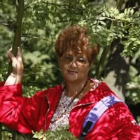

Învățăm
cu răbdare
Lecții particulare pentru copii din ciclul primar, cu un om care a ales să rămână aproape de școală.
Scrie-mi pe FacebookFiecare copil are ritmul lui.
De acolo începem.

Aceeași bucurie de a explica.
Aproape de copii
O viață la catedră.
Aceeași bucurie de a explica.
Sunt Elena Simina. Îmi place să predau și să văd cum un copil prinde curaj atunci când începe să înțeleagă.
După o viață dedicată învățământului primar, îmi doresc să continui prin lecții particulare. Cred în explicații liniștite, în întrebări puse fără teamă și în bucuria de a descoperi împreună.
Copiii nu au nevoie să ridicăm vocea ca să ne asculte. Au nevoie să le trezim curiozitatea, să îi luăm în serios și să le lăsăm timp să încerce.
Elena
Pas cu pas
Nu pornim de la cât ar trebui să știe un copil, ci de la ce înțelege acum.
Putem discuta despre exersarea cititului, a scrisului sau a socotitului și despre ce îi dă bătăi de cap la școală. Acestea sunt exemple; sprijinul potrivit îl stabilim împreună.
Un început firesc
-
Mai întâi, ascultăm
Îmi povestești despre copilul tău: ce îi place, unde se împotmolește și cum se simte la școală.
-
Alegem ce exersăm
Discutăm despre nevoile lui și alegem împreună de unde ar fi bine să începem.
-
Lăsăm loc întrebărilor
Cu explicații pe înțelesul lui și încercări fără grabă, facem loc înțelegerii, nu fricii de a greși.
Un caiet, întrebări și timp să înțelegem.
Bine de știut
Detaliile practice le stabilim împreună, înainte de prima lecție.
Pentru cine sunt lecțiile?
Pentru copii din ciclul primar care au nevoie de sprijin și explicații cu răbdare. Spune-mi în ce clasă este copilul și ce ați dori să lucrăm, ca să vedem dacă îl pot ajuta.
Unde și cum ne întâlnim?
De stabilit împreună. Localitatea, locul și formatul lecțiilor nu sunt încă afișate aici. Le clarificăm în discuția de început.
Care sunt programul și costul?
De stabilit împreună. Îți voi confirma disponibilitatea, durata și tariful înainte de a hotărî dacă începem.
Ce să îți scriu prima dată?
Sunt suficiente clasa copilului și câteva cuvinte despre sprijinul de care are nevoie. Nu trimite acte, informații medicale sau alte date sensibile.
Să începem
cu o discuție
Povestește-mi puțin despre copilul tău. Vedem împreună care ar putea fi următorul pas.
Scrie-mi pe FacebookLinkul deschide profilul meu de Facebook.
Nu colectăm date prin acest site.